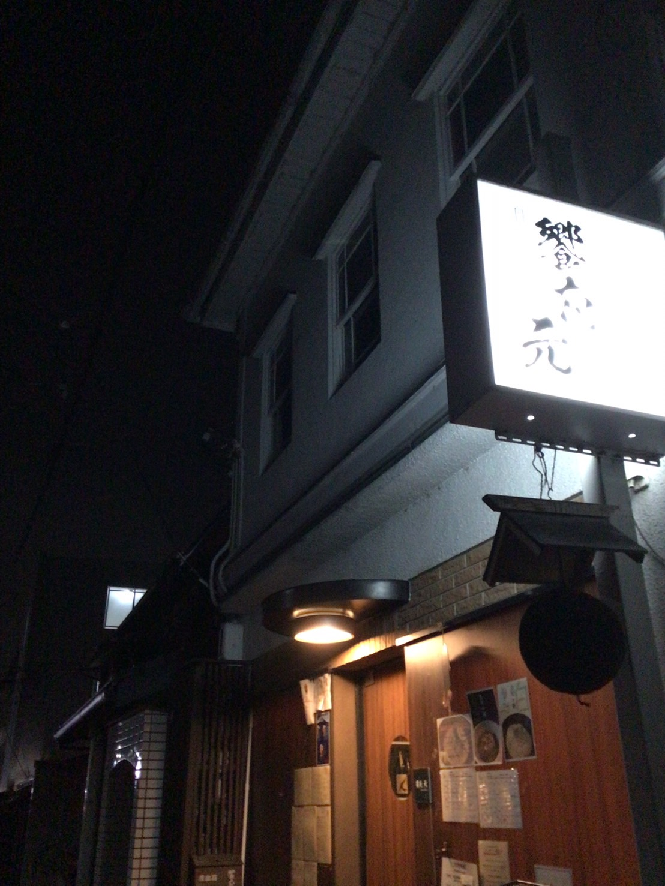

アラカルトも予約可能
お席のみのご予約も承ります。当日の電話予約は23:00までです。
17:00—02:00最終入店 24:00

FOOD & SAKE
京都の旬と、全国から選ぶこだわりの食材。和食の技を軸にしながら、枠にとらわれない組み合わせで、その日の一皿を仕立てます。アラカルトで一品から、コースで料理の流れを味わう夜まで。過ごし方は自由です。


日本酒・焼酎のテイスティングと提案に関する上位資格。 香りや味わいを見極め、温度、酒器、料理との相性まで考えて、その方に合う一杯を組み立てます。
饗応 元では、銘柄の知名度だけに頼らず、「今の一皿に合うか」「今日の気分に寄り添うか」を大切にご提案します。詳しくなくても、好みを一言お聞かせください。
酒匠について詳しく見る →RESERVATION & ACCESS
当日のお席も、まずはお電話ください。コースとアラカルトでは予約期限が異なります。
お席のみのご予約も承ります。当日の電話予約は23:00までです。
仕入れと仕込みのため、ご来店日の2日前までにご予約ください。
最終入店は24:00。当日の予約電話受付は23:00までです。